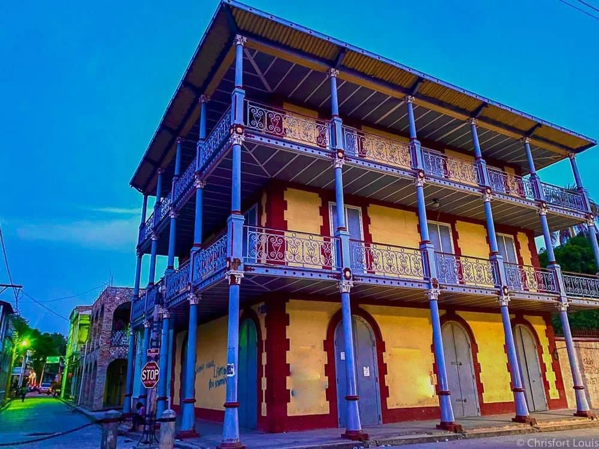
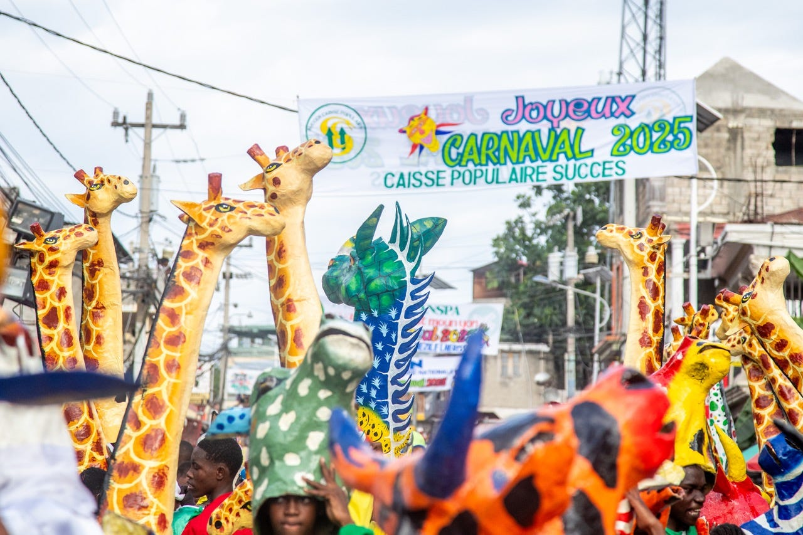
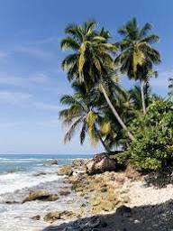
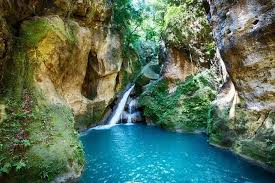
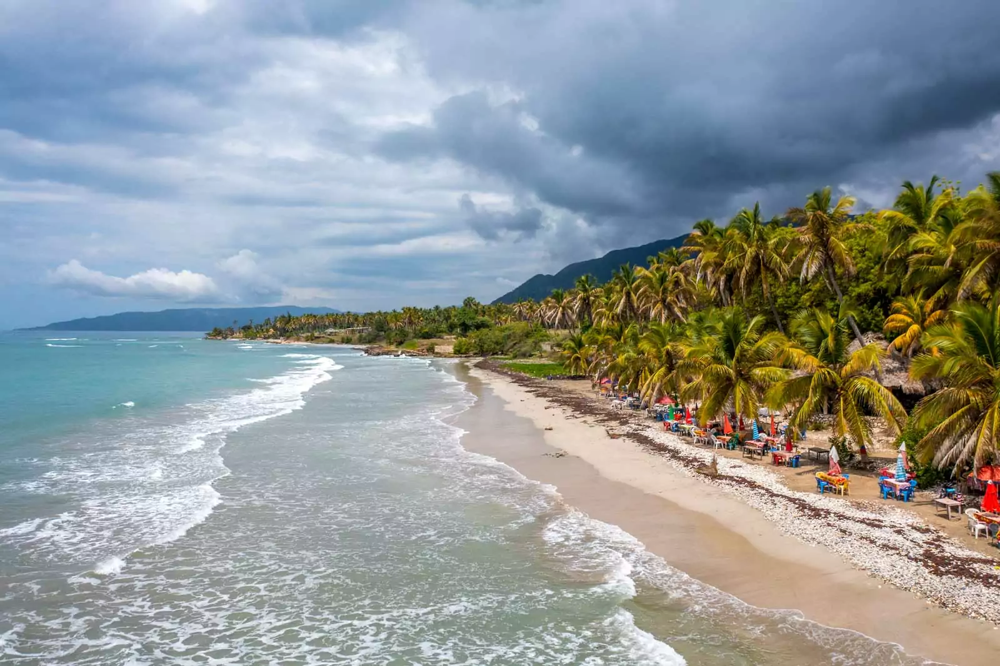
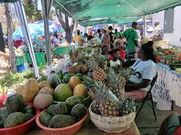
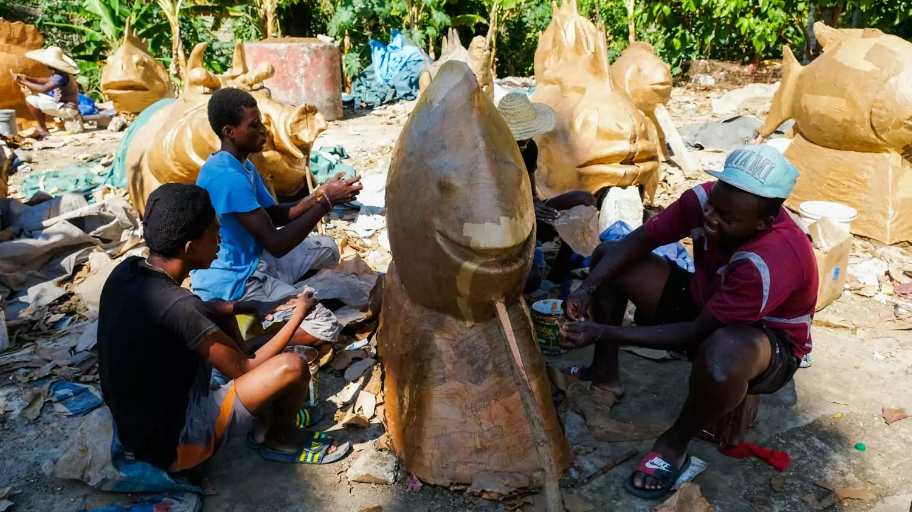
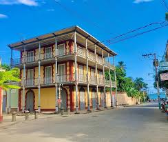
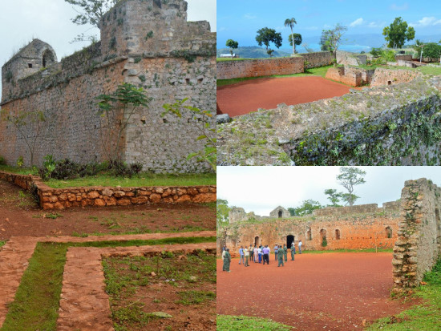
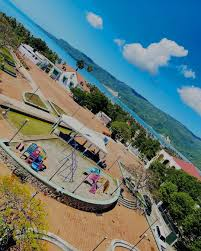

Capitale culturelle d'Haïti & Ville Créative de l'UNESCO

L'architecture coloniale emblématique
Un centre historique témoin de l'âge d'or
Fondée en 1698, Jacmel a prospéré grâce au commerce maritime, notamment celui du café. Suite au grand incendie de 1896, la ville a été reconstruite selon un plan moderne. Ses demeures à deux étages avec colonnettes en fonte et balcons en fer forgé, importés directement d'Europe et des États-Unis, en font un site architectural unique.
Ce patrimoine exceptionnel a valu à Jacmel d'être inscrite sur la liste indicative du patrimoine mondial de l'UNESCO.
Le temple de la créativité et du papier mâché
Cœur battant de l'artisanat haïtien, Jacmel est Ville Créative de l'UNESCO (catégorie "Artisanat et arts populaires"). Les artistes y excellent dans le travail du papier mâché, créant des masques et figures monumentaux. Le Carnaval de Jacmel est légendaire : un immense théâtre de rue où défilent des troupes folkloriques et des personnages masqués, véritables œuvres d'art vivantes.

Création artisanale en papier mâché

Paysage tropical préservé de la côte Sud
Biodiversité et paysages d'exception
Au-delà de son patrimoine culturel, Jacmel est une destination majeure pour l'écotourisme. Sa région abrite des joyaux naturels, tels que Bassin Bleu, un ensemble de trois bassins aux eaux turquoise reliés par des cascades, et de superbes plages de sable blanc bordées de palmiers.
Notre Galerie : Les Incontournables de Jacmel

L'oasis naturelle de Bassin Bleu

Détente à la Plage de Raymond-les-Bains

Ambiance locale au marché

Atelier de création de masques

Détail de l'architecture coloniale

Le Fort Ogé, patrimoine militaire historique

La Place d'Armes de Toussaint Louverture, cœur de la ville